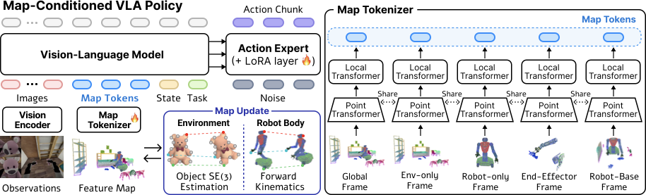

SERF: Spatiotemporal Environment and Robot Feature Map for Long-Horizon Mobile Manipulation
1UC San Diego 2Agency for Defense Development 3SceniX Inc. 4University of Michigan
IEEE ICRA 2026 Workshop on Multi-Modal Spatial AI, Best Paper Award
Spatiotemporal Environment and Robot Feature (SERF) Map
A persistent spatial memory for the robot, objects, and task-relevant scene state.
Our SERF map maintains a 4D scene representation of both the environment and the robot body in a shared latent feature space. We build the map using neural points, which are 3D points with learnable features trained to reconstruct dense DINO embeddings.
To track changes, we construct 3D keypoint correspondences between consecutive observations, estimate an object-level rigid transform, and update the corresponding points. We extend the neural points to the robot body by sampling surface points from a URDF and positioning them via forward kinematics at each step.
BEHAVIOR-1K
Task 21: Collecting Children's Toys
Videos are played at 20x speed.
We construct and maintain the SERF map using only egocentric observations and proprioceptive state
Map-conditioned VLA Policy
SERF map tokens provide a VLA policy with an explicit spatial representation.
We condition the VLA policy on SERF map tokens in addition to RGB observations, proprioceptive state, and the task embedding. We tokenize the SERF map across multiple reference frames, including global, end-effector, and robot-base frames, to capture both local and global context. These tokens provide the SERF VLA policy with allocentric scene memory and egocentric robot-environment context for long-horizon action decisions.

Evaluation
We evaluate whether the SERF policy improves long-horizon mobile manipulation compared with an image-only VLA policy by providing persistent spatiotemporal memory. We also evaluate whether SERF supports scene-configuration generalization and failure recovery.
Long-Horizon Mobile Manipulation
BEHAVIOR-1K Task Progress
SERF outperforms PI0.5 (Image-only) across all tasks, follows more direct trajectories, and reaches subgoals faster.
Task 21: Collecting Children's Toys
Videos are played at 20x speed.
assets/experiments/task-0021_pi0.5.mp4
assets/experiments/task-0021_ours.mp4
assets/experiments/task-0022_pi0.5.mp4
assets/experiments/task-0022_ours.mp4
assets/experiments/task-0026_pi0.5.mp4
assets/experiments/task-0026_ours.mp4
Scene-Configuration Generalization
Out-of-Distribution (OOD) Configuration Shifts
Policies are trained only on the original in-distribution scenes and evaluated on a moved goal location, additional target objects, and target objects placed in an unvisited navigation region. SERF achieves higher task progress across all three variations, suggesting that explicit spatial representation supports robust behavior under out-of-distribution (OOD) configuration shifts.
Out-of-Distribution (OOD) Settings
Scene-Configuration Generalization
Failure Recovery
Object-Drop Recovery
To induce the failure, we open the gripper during transport so the held object drops and leaves the camera view, then resume both policies from the same post-drop state. SERF re-localizes and re-grasps the dropped object more reliably.
assets/recovery/image_ft_recovery_result_x4.mp4
assets/recovery/ours_recovery_result_x4.mp4
Failure Recovery